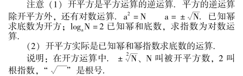
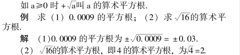
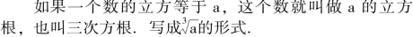
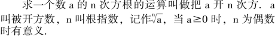
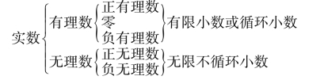
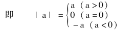
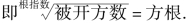
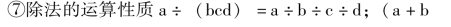
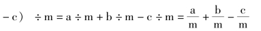

数的开方与实数
【平方根】
如果一个数的平方等于a，那么这个数就叫做a 的平方根.也叫二次方根.
【有理数的平方根】
(1) 一个正数的平方根有两个，这两个平方根互为相反数；
(2) 零的平方根是零；(3) 负数没有平方根.
【开平方】
求一个数的平方根的运算，叫做开平方.

【算术平方根】
正数的正平方根叫这个数的算术平方根；零的算术平方根是零.

注意: 正数的平方根为两个值；算术平方根为一个值.(算术根不负).
【立方根】

【开立方】
求一个数立方根的运算，叫做开立方.开立方与立方为互逆运算.
【有理数的立方根】
(1) 正数的立方根是一个正数；
(2) 零的立方根还是零；(3) 负数的立方根是一个负数.
【n 次方根】
如果一个数的n 次方(n >1 整数) 等于a，这个数就叫做a 的n 次方根.即若xn＝a，则x 叫a 的n 次方根.
【开n 次方】

【n 次算术根】
正数a 的正的n 次方根叫做a 的n 次算术根；零的n次方根为零，也叫零的n 次算术根；负数没有算术根.
【无理数】
无限不循环小数叫做无理数.
【实数】
有理数和无理数统称实数.实数的系统表如下:

【实数的绝对值】
(1) 一个正实数的绝对值是它本身；
(2) 一个负实数的绝对值是它的相反数；
(3) 零的绝对值是零.

【实数和数轴】
任何一个实数都可以在数轴上找到一个点代表它，任何一个数轴上的点都表示一个实数.数轴上的点与实数一一对应.实数的单位是1.
【实数大小的比较】
在数轴上靠近箭头的数比离开箭头远的数大(如果箭头在右，则右边的数总比左边的数大).
(1) 正数大于零和一切负数；
(2) 两个正数，绝对值大的数较大，绝对值小的数较小；
(3) 负数都小于正数和零；
(4) 两个负数，绝对值大的数反而小，绝对值小的数反而大.
【实数的运算】
(1) 实数的代数运算有
①加法: 求和的运算.它是由原点连续做出的几个实数向量的和，“和” 是终点在数轴上所代表的数.即加数1＋加数2＝和.
②减法: 已知两数“和” 和一个加数求另一加数的运算，它是加法的逆运算.即被减数－减数＝差.
③乘法: 求两个数积的运算.即因数1 ×因数2 ＝积.
④除法: 已知两数积和其中一个因数.求另一因数的运算.它是乘法的逆运算.即被除数÷除数＝商.
⑤乘方: 求一个数幂的运算.即(底数) 指数＝幂
⑥开方: 求一个数方根的运算，它是乘方的逆运算.是已知幂和指数求底数的运算.

当根指数为奇数时，被开方数为任意实数；当根指数为偶数时，被开方数不负(正数或零).
(2) 运算的定律和性质
①加法交换律a－b ＝b ＋a.
②加法结合律(a－b) ＋c ＝a ＋ (b ＋c).
③乘法交换律ab ＝ba.
④乘法结合律(ab) c ＝a (bc).
⑤乘法对于加法的分配律(a ＋b) c ＝ac ＋bc.
⑥减法的运算性质a－ (b ＋c－d) ＝a－b－c ＋d.


(3) 运算顺序
①先进行第三级运算(乘方、开方)，再进行第二级(乘、除)，最后进行第一级(加、减)；
②在同一级运算中按先后，从左至右；
③如果有括号，括号内运算优先；
④可根据运算定律和性质，改变运算顺序.
【完全平方数】
如果一个正数恰好是另一个有理数的平方，这个正数就叫做完全平方数.